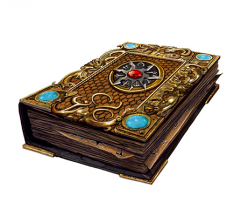
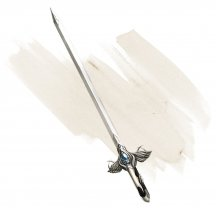
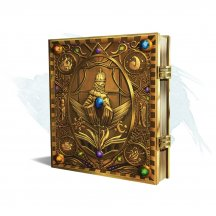

- Чудесный предмет, очень редкий
- Рекомендованная стоимость: 5 001-50 000 зм
В этом томе находится информация и чары, необходимые для создания конкретного вида голема. Мастер сам выбирает вид голема или определяет его случайным образом. Для того чтобы расшифровать и использовать справочник, вы должны быть заклинателем с как минимум двумя ячейками заклинаний 5-го уровня. Существо, которое не может использовать справочник по големам, но читает его, получает урон психической энергией 6к6.
к20 Голем Время Стоимость 1-5 Глиняный 30 дней 65 000 зм 6 Железный 120 дней 100 000 зм 7-8 Каменный 90 дней 80 000 зм 9-20 Мясной 60 дней 50 000 зм Для того чтобы создать голема, вы должны потратить время, указанное в таблице, работая без перерывов со справочником в руке, отдыхая не более 8 часов в день. Вы также должны оплатить указанную стоимость, приобретая расходные материалы.
После того как голем создан, книга исчезает в магическом пламени. Голем оживает, когда его натрут пеплом справочника. Он находится под вашим контролем, понимает ваши устные команды и выполняет их.
Магические предметы

- Чудесный предмет, очень редкий
- Рекомендованная стоимость: 5 001-50 000 зм
Эта книга описывает упражнения по физкультуре, и её слова наполнены магией. Если вы потратите 48 часов за период не более 6 дней на изучение содержимого книги и применение его на практике, ваша Сила, а также её максимум увеличатся на 2. После этого руководство теряет магию, но восстанавливает её через 100 лет.
Книги, увеличивающие характеристики: справочник быстроты действий (Ловкость), справочник телесного здоровья (Телосложение), фолиант лидерства и влияния (Харизма), фолиант понимания (Мудрость), фолиант чистых мыслей (Интеллект).

- Чудесный предмет, очень редкий
- Рекомендованная стоимость: 5 001-50 000 зм
Эта книга содержит советы по здоровью и питанию, и её слова наполнены магией. Если вы потратите 48 часов за период не более 6 дней на изучение содержимого книги и применение его на практике, ваше Телосложение, а также его максимум увеличатся на 2. После этого руководство теряет магию, но восстанавливает её через 100 лет.
Книги, увеличивающие характеристики: справочник быстроты действий (Ловкость), справочник полезных упражнений (Сила), фолиант лидерства и влияния (Харизма), фолиант понимания (Мудрость), фолиант чистых мыслей (Интеллект).
- Оружие (длинный меч), очень редкое (требуется настройка существом с добрым мировоззрением)
- Рекомендованная стоимость: 5 001-50 000 зм
Вы получаете бонус +2 к броскам атаки и урона этим магическим оружием.
Возрождение. Действием вы можете наложить заклинание возрождение [revivify] с помощью меча. Вы должны коснуться цели мечом, чтобы наложить заклинание. Как только это свойство оружия будет использовано, его нельзя будет использовать снова до следующего рассвета.
Разум. Сталь-это разумный, законный добрый длинный меч с Интеллектом 8, Мудростью 11 и Харизмой 15. Он обладает нормальным слухом и зрением на расстоянии до 60 футов. Меч может говорить, читать и понимать Общий и Драконий. Он беспокоится о вашем благополучии, пока вы настроены на него, и ему не нравится избегать сражений.

- Оружие (стрела), очень редкое
- Рекомендованная стоимость: 2 501-25 000 зм
Стрела убийства это магическое оружие, предназначенное для убийства существ определённого вида. Область применения может быть как широкой, так и более конкретной; например, существуют и стрелы убийства драконов и стрелы убийства синих драконов. Если существо, принадлежащее к виду, расе или группе, связанной со стрелой убийства, получает от неё урон, оно должно совершить спасбросок Телосложения Сл 17, получая дополнительный колющий урон 6к10 при провале или половину этого урона при успехе.
После того как стрела убийства причиняет существу дополнительный урон, она становится немагической стрелой.
Есть и другие разновидности боеприпасов с такой же магией, такие как арбалетные болты убийства, хотя стрелы встречаются чаще всего.

- Чудесный предмет, очень редкий
- Рекомендованная стоимость: 5 001-50 000 зм
На первый взгляд эта сумка напоминает сумку хранения, но на самом деле это ротовое отверстие гигантского межпространственного существа. Если сумку вывернуть наизнанку, ротовое отверстие закроется.
Существо, связанное с сумкой, может чувствовать всё, что помещают в сумку. Материя животного или растительного происхождения, помещенная в сумку, пожирается и исчезает навсегда. Если в сумку будет помещена часть живого существа, как в случае, когда кто-нибудь засовывает в неё руку, существует 50-процентный шанс, что существо затянет в сумку. Существо в сумке может действием попытаться высвободиться, совершая проверку Силы Сл 15. Другое существо может действием залезть рукой в сумку, чтобы вытянуть оттуда другое существо, совершая проверку Силы Сл 20 (при условии, что его самого не затянет туда). Все существа, начинающие ход в сумке, пожираются, а их тела уничтожаются.
Неживые предметы могут храниться в сумке, которая вмещает один кубический фут такой материи. Однако, один раз в день сумка пожирает все хранящиеся в ней предметы, выплёвывая их на другом плане существования. Мастер сам определяет время и план.
Если сумку проткнут или разорвут, она уничтожается, а всё её содержимое переносится в случайным образом выбранное место на Астральном Плане.
- Чудесный предмет, очень редкий (требуется настройка)
- Рекомендованная стоимость: 5 001-50 000 зм
Этот ониксовый шар имеет глубокие спиралевидные бороздки и висит на железной цепи. Пока на вас находится этот шар, вы получаете следующие преимущества:
- Значение вашей Мудрости увеличивается на 2, как и ваш максимум для этой характеристики.
- Вы получаете тёмное зрение на расстоянии 60 футов. Если у вас уже есть тёмное зрение, сфера увеличивает его радиус на 60 футов
- Вы получаете преимущество на проверки Мудрости, совершаемые для нахождения спрятанных дверей и ходов.
Проклятие. Шар проклят, как только вы на него настраиваетесь, проклятие распространятся и на вас. Пока вы остаетесь проклятым, вы не желаете расставаться с шаром, постоянно держа его при себе. Весь немагический огонь в радиусе 30 футов от вас автоматически гаснет, а наносимый вами урон огнём уменьшается вдвое.
- Чудесный предмет, очень редкий
- Рекомендованная стоимость: 5 001-50 000 зм
Сфера опустошения — это бомба, заряженная силой стихий. Сферы создаются внутри элементальных узлов с помощью особых ритуалов, в которых используется элементальное оружие. Тип сферы зависит от типа узла: например, воздушные сферы создаются в узле воздуха. Ритуал создания занимает 1 час и требует специальных компонентов стоимостью в 2000 зм, которые тратятся в процессе.
Сфера опустошения имеет 12 дюймов в диаметре, весит 10 фунтов и обладает гладкой поверхностью. Она взрывается спустя 1к100 часов после создания, высвобождая содержащуюся в ней энергию стихий. Внешний осмотр сферы никак не покажет, сколько времени осталось до взрыва, но это значение можно узнать с помощью заклинаний опознание [ifdentify] и предсказание [divination].
Сфера имеет КД 10, 15 хитов и обладает иммунитетом к яду и урону психической энергией. Если хиты сферы опускаются до 0, она взрывается мгновенно.
Для безопасного хранения сферы можно создать специальный контейнер, на котором должны быть выгравированы символы противоположной стихии (например, в контейнере с символами земли можно хранить воздушную сферу опустошения). Пока сфера лежит в контейнере, она не может взорваться и издаёт гудящие звуки. Если сферу, время до взрыва которой уже истекло, извлечь из контейнера, то она взорвётся спустя 1к6 ходов. Чтобы предотвратить взрыв, её можно снова положить в контейнер.
Вне зависимости от типа сферы, её эффект распространяется на радиус в 1 милю. Сфера является центром эффекта и уничтожается после одного использования.
Воздушная сфера. В момент взрыва сфера создаёт сильную бурю, которая длится в течение 1 часа. На существ, которые заканчивают свой ход в зоне поражения сферы, обрушивается сильный ветер с осколками камней и прочим мусором, поэтому каждое такое существо должно преуспеть в спасброске Телосложения Сл 18, иначе получит дробящий урон 1к4. Силы ветра хватает, чтобы вырывать с корнем чахлые деревья или уничтожать ветхие строения, если те находятся в области действия сферы как минимум 10 минут. В зоне действия сферы применяются правила по сильному ветру из главы 5 «Руководства Мастера».
Сфера земли. В момент взрыва сфера создаёт в зоне поражения эффект, подобный заклинанию землетрясение [earthquake], который длится 1 минуту. Эффект заклинания начинает действовать в тот же ход, что и взрыв сферы.
Сфера огня. В момент взрыва сфера создаёт в зоне поражения волну невероятной жары, действие которой длится на протяжении 24 часов.
В зоне действия сферы применяются правила по чрезвычайной жаре из главы 5 «Руководства Мастера». В конце каждого часа с вероятностью в 10% в случайном месте в пределах зоны действия сферы может начаться пожар, который мгновенно покрывает квадратную область со стороной в 10 футов, а затем каждый раунд распространяется на такую же область. Пожар будет бушевать до тех пор, пока не будет потушен или не выгорит полностью. Существа, которые проходят на расстоянии 10 футов от пожара или начинают там свой ход, получают урон огнём 3к6.
Сфера воды. В момент взрыва сфера создаёт в зоне поражения ужасный ливень, действие которого длится на протяжении 24 часов. В зоне действия сферы применяются правила по обильным осадкам из главы 5 «Руководства Мастера». Если в зоне действия сферы есть крупные водоёмы, они выходят из берегов через 2к10 часов с момента начала ливня. За это время уровень воды в них поднимается на 10 футов, затапливая окружающую местность. Наводнение движется со скоростью 100 футов в раунд, удаляясь от водоёма источника до тех пор, пока не достигнет края области действия сферы: там вода уходит под землю (и, возможно, отступает назад к источнику). Поток воды сметает на своём пути лёгкие постройки и уносит существ, чей размер — Большой или меньше. Наводнение уничтожает возделанные поля и, в зависимости от ландшафта, может быть источником селей.

- Оружие (любой меч), очень редкое (требуется настройка)
- Рекомендованная стоимость: 5 001-50 000 зм
Вы можете бонусным действием бросить этот магический меч в воздух и произнести командное слово. После этого меч начнёт парить, пролетает до 30 футов и атакует одно существо на ваш выбор в пределах 5 футов от него. Меч использует ваш бросок атаки и ваш модификатор характеристики для броска урона.
Пока меч парит, вы можете бонусным действием заставить его перелететь на расстояние 30 футов в другое место, находящееся в пределах 30 футов от вас. Частью этого же бонусного действия вы можете заставить меч атаковать одно существо, находящееся в пределах 5 футов от него.
После того как парящий меч совершит четвёртую атаку, он пролетает до 30 футов и пытается вернуться в вашу руку. Если у вас нет свободных рук, он падает на землю у ваших ног. Если у меча нет свободного пути до вас, он перемещается максимально близко к вам и потом падает на землю. Он перестаёт парить, если вы хватаете его или перемещаетесь более чем на 30 футов от него.
- Чудесный предмет (татуировка), очень редкий (требуется настройка)
- Рекомендованная стоимость: 5 001-50 000 зм
Нанесённая специальной иглой, эта магическая татуировка содержит символы жизни и возрождения.
Настройка на татуировку. Чтобы настроиться на этот предмет, вам необходимо на протяжении всего времени настройки нажимать иглой на кожу там, где вы хотите, чтобы татуировка находилась. Когда настройка завершается, игла превращается в чернила, которые принимают очертания нарисованного вами узора на коже.
Если ваша настройка на татуировку заканчивается, она исчезает, а игла снова появляется в вашем пространстве.
Некротическое сопротивление. Вы получаете сопротивление урону некротической энергией.
Опека жизни. Когда ваши хиты снижаются до 0, вместо этого они опускаются до 1. Это свойство не может быть использовано вновь до следующего рассвета.
- Чудесный предмет (татуировка), очень редкий (требуется настройка)
- Рекомендованная стоимость: 5 001-50 000 зм
Нанесённая специальной иглой, эта магическая татуировка выглядит как одноцветный узор.
Настройка на татуировку. Чтобы настроиться на этот предмет, вам необходимо на протяжении всего времени настройки нажимать иглой на кожу там, где вы хотите, чтобы татуировка находилась. Когда настройка завершается, игла превращается в чернила, которые принимают очертания нарисованного вами узора на коже.
Если ваша настройка на татуировку заканчивается, она исчезает, а игла снова появляется в вашем пространстве.
Сопротивление урону. Пока татуировка находится на вашей коже, у вас есть сопротивление одному типу урона в зависимости от цвета, как указано в таблице ниже. Мастер выбирает цвет или определяет его случайным образом.
к10 Тип урона Цвет 1 Кислота Зеленый 2 Холод Синий 3 Огонь Красный 4 Силовое поле Белый 5 Молния Желтый 6 Некротическая энергия Чёрный 7 Яд Фиолетовый 8 Психическая энергия Серебро 9 Излучение Золото 10 Звук Оранжевый Поглощение урона. При получении урона выбранного типа вы можете реакцией получить иммунитет к этому типу урона и восстановить количество хитов, равное половине урона, который вы должны были получить. Эта реакция не может быть совершена вновь до следующего рассвета.
- Чудесный предмет (татуировка), очень редкий (требуется настройка)
- Рекомендованная стоимость: 5 001-50 000 зм
Нанесённая специальной иглой, эта татуировка смещается и колеблется на коже, её части кажутся размытыми.
Настройка на татуировку. Чтобы настроиться на этот предмет, вам необходимо на протяжении всего времени настройки нажимать иглой на кожу там, где вы хотите, чтобы татуировка находилась. Когда настройка завершается, игла превращается в чернила, которые принимают очертания нарисованного вами узора на коже.
Если ваша настройка на татуировку заканчивается, она исчезает, а игла снова появляется в вашем пространстве.
Призрачная форма. Татуировка имеет 3 заряда и ежедневно восстанавливает все заряды на рассвете. Бонусным действием, пока татуировка находится на вашей коже, вы можете потратить 1 заряд татуировки и стать бестелесным до конца вашего следующего хода. В течение этого срока вы получаете следующие преимущества:
- Вы получаете сопротивление дробящему, колющему и рубящему урону от немагических атак.
- Вас нельзя схватить или опутать.
- Вы можете перемещаться сквозь существ и твёрдые объекты как по труднопроходимой местности. Если вы оканчиваете ход внутри твёрдого объекта, вы получаете 1к10 урона силовым полем. Если эффект заканчивается, когда вы находитесь внутри твёрдого объекта, вы выталкиваетесь в ближайшее свободное пространство, получая 1к10 урона силовым полем за каждые 5 футов преодолённого расстояния.
- Чудесный предмет, очень редкий (требуется настройка)
- Рекомендованная стоимость: 5 001-50 000 зм
Эта нежная серебряная тиара украшена звездной иконографией. Пока вы носите корону, драгоценные камни на кончиках тиары отделяются и вращаются вокруг вашей головы.
Тиара имеет 6 зарядов для следующих свойств, которые можно использовать, пока вы носите эту тиару:
- Звездный полет. Бонусным действием вы можете потратить 1 заряд, чтобы получить силу полета на 10 минут. На время действия вы получаете скорость полета, равную скорости ходьбы, и можете парить. Во время полета вы слабо светитесь звездным светом.
- Звездный удар. Действием вы можете потратить любое количество зарядов, чтобы запустить снаряды из холодного звездного света. Вы запускаете количество снарядов, равное количеству потраченных зарядов, и можете направить их на одно или несколько существ, при условии, что все существа находятся в пределах 120 футов от вас и вы можете их видеть. Снаряды автоматически попадают по цели, и каждый снаряд наносит 2к4 урона холодом.
- Кружащийся град. Вы можете действием потратить 3 заряда, и наложить заклинание град [ice storm] (Сл спасброска 16).
Корона восстанавливают 1к6 израсходованных зарядов ежедневно на рассвете.
- Оружие (длинный меч), очень редкое (требуется настройка)
- Рекомендованная стоимость: 5 001-50 000 зм
Длинный меч, Тиарулай, является разумным, нейтрально-добрым мечом остроты [sword of sharpness] с изумрудным лезвием и драгоценными камнями, встроенными в его рукоять и навершие. Магические свойства меча подавляются до тех пор, пока он не будет удален из черепа Вальдемара.
Существа со злым мировоззрением не могут настроиться на Тиарулай; любое подобное существо, попытавшееся сделать это, получает 20 урона психической энергией. Изумрудный клинок оружия не может быть поврежден или затуплен, и меч не может быть телепортирован куда-либо без своего владельца, пока они настроены друг на друга.
Заклинания. Меч имеет 6 зарядов, и он ежедневно восстанавливает 1к4 + 2 израсходованных заряда на рассвете.
Настроенное на меч существо может действием истратить 1 или более зарядов для накладывания одного из следующих заклинаний без затрат материальных компонентов: полёт [fly] (2 заряда), превращение [polymorph] (3 заряда) или путешествие через растения [transport via plants] (4 заряда).
Разум. Тиарулай - меч с Интеллектом 17, Мудростью 12 и Харизмой 20. Он обладает слухом и истинным зрением в пределах 120 футов. Он телепатически общается с настроенным на него владельцем и может говорить, читать и понимать Драконий, Эльфийский, Сильван и Общий. Кроме того, меч может установить истинную ценность любого драгоценного камня в пределах 5 футов от себя.
Индивидуальность. Тиарулай восхищается красотой, музыкой, изобразительным искусством и поэзией. Полное самомнения оружие стремится улучшить свой внешний вид. Он без ума от драгоценных камней и страстно желает лучшие из них для собственного украшения. Больше всего он хочет вернуться туда, где он был создан - в окружающие Миф Драннор леса. Если цели его владельца идут вразрез с его собственными, Тиарулай пытается подчинить своего владельца и сбежать из Подгорья, после чего он сможет наложить заклинание путешествие через растения для того, чтобы вернуться в родные леса.
- Оружие (трезубец), очень редкое (требуется настройка)
- Рекомендованная стоимость: 5 001-50 000 зм
Вы получаете бонус +2 к броскам атаки и урона, совершённым этим магическим оружием. Вы также совершаете с преимуществом броски атаки этим оружием, находясь под водой.
Этот магический трезубец имеет 3 заряда. Вы можете потратить 1 заряд чтобы наложить власть над водами [control water] (Сл 15) из этого трезубца, или 3 заряда, чтобы наложить заклинание цунами [tsunami] (Сл 15) из этого трезубца. Трезубец восстанавливает 1к3 израсходованных зарядов ежедневно на рассвете.

- Чудесный предмет, очень редкий
- Рекомендованная стоимость: 5 001-50 000 зм
Эта книга содержит руководства по оказанию влияния на других, и её слова наполнены магией. Если вы потратите 48 часов за период не более 6 дней на изучение содержимого книги и применение его на практике, ваша Харизма, а также её максимум увеличатся на 2. После этого руководство теряет магию, но восстанавливает её через 100 лет.
Книги, увеличивающие характеристики: справочник быстроты действий (Ловкость), справочник полезных упражнений (Сила), справочник телесного здоровья (Телосложение), фолиант понимания (Мудрость), фолиант чистых мыслей (Интеллект).

- Чудесный предмет, очень редкий
- Рекомендованная стоимость: 5 001-50 000 зм
- Эта книга содержит упражнения на интуицию и проницательность, а ее слова заряжены магией. Если вы потратите 48 часов за период не более 6 дней на изучение содержимого книги и применение его на практике, ваша Мудрость, а также её максимум увеличатся на 2. После этого руководство теряет магию, но восстанавливает её через 100 лет.
Книги, увеличивающие характеристики: справочник быстроты действий (Ловкость), справочник полезных упражнений (Сила), справочник телесного здоровья (Телосложение), фолиант лидерства и влияния (Харизма), фолиант чистых мыслей (Интеллект).

- Чудесный предмет, очень редкий
- Рекомендованная стоимость: 5 001-50 000 зм
Эта книга содержит упражнения по тренировке памяти и логики, и её слова наполнены магией. Если вы потратите 48 часов за период не более 6 дней на изучение содержимого книги и применение его на практике, ваш Интеллект, а также его максимум увеличатся на 2. После этого руководство теряет магию, но восстанавливает её через 100 лет .
Книги, увеличивающие характеристики: справочник быстроты действий (Ловкость), справочник полезных упражнений (Сила), справочник телесного здоровья (Телосложение), фолиант лидерства и влияния (Харизма), фолиант понимания (Мудрость).
- Чудесный предмет, очень редкий (требуется настройка)
- Рекомендованная стоимость: 5 001-50 000 зм
Будучи настроенным на это устройство, вы получаете бонус +1 к спасброскам Интеллекта. Впервые, когда вы настраиваетесь на хронолометр, вы выбираете один язык, который вы не знаете. Впоследствии вы узнаете этот язык, настроившись на предмет.
Вор времени. В начале своего хода бросьте к6 (никаких действий не требуется). При выпадении «1-3» вы замедляете время, получая дополнительное Действие в этом ходу и удваивая свою скорость до конца хода. При выпадении «4-6» вы отправляетесь вперед во времени, чтобы предупредить себя о том, что должно произойти. В следующий раз, когда вы проваливаете спасбросок, проверку характеристики или промахнётесь броском атаки, вы можете повторить бросок и использовать любой результат. Как только вы используете это свойство хронолометра, оно не может быть использовано снова до следующего рассвета.
Обмен судьбами. Когда существо, которое вы видите в пределах 30 футов от вас, получает урон, вы можете реакцией, даровать этому существу дополнительное Действие. Существо может использовать это Действие в свой ход, или использовать его незамедлительно, даже если сейчас не его ход. Как только вы используете это свойство хронолометра, оно не может быть использовано снова до следующего рассвета.
Часть целого. Пока этот компонент не установлен в Планетарий странника [orrery of the wanderer], его магия может функционировать с перебоями или с непредсказуемыми побочными эффектами, как решит Мастер.
- Чудесный предмет, очень редкий (требуется настройка)
- Рекомендованная стоимость: 5 001-50 000 зм
Будучи настроенным на это устройство, вы получаете бонус +1 к спасброскам Ловкости, и вы всегда знаете, где север. Кроме того, вы можете накладывать на себя заклинание скороход [longstrider] когда пожелаете.
Голосовой навигатор. Вы можете назвать любое место в пределах 10 миль от вашего текущего местоположения, которое известно по крайней мере одному существу, также в пределах 10 миль от названного местоположения (включая вас). Как только вы называете место, бестелесный голос, слышимый только вами, направит к выбранному месту самым безопасным и коротким маршрутом. Голос знает, о необходимости избегать природные опасности, чтобы не отправить вас через непроходимую пустыню или в озеро. Но у него нет знания или способности помочь вам избежать монстров, врагов, ловушек, запертых дверей и тому подобного.
Часы бесполезны для поиска мест, которые полностью засекречены или неизвестны ни одному существу в пределах досягаемости. Как только вы используете это свойство часов путешествия, оно не может быть использовано снова до следующего рассвета.
Уйти от всего этого. Действием вы можете наложить заклинание телепортация [teleport]. Как только вы используете это свойство часов путешествия, оно не может быть использовано снова до следующего рассвета.
Часть целого. Пока этот компонент не установлен в Планетарий странника [orrery of the wanderer], его магия может функционировать с перебоями или с непредсказуемыми побочными эффектами, как решит Мастер.

- Чудесный предмет, очень редкий
- Рекомендованная стоимость: 2 501-25 000 зм
Обычно эти краски находят в 1к4 баночках в красивом деревянном ящике вместе с кисточкой (весь набор весит 1 фунт). Эти краски позволяют рисовать трёхмерные предметы в двух измерениях. Краска сама стекает с кисти и формирует желаемый предмет, когда вы концентрируетесь на изображении.
Одной баночки достаточно, чтобы покрыть 1000 квадратных футов поверхности, что позволяет вам создавать неживые предметы и особенности местности — такие как двери, ямы, цветы, деревья, решётки, комнаты или оружие — не превышающие в объёме 10000 кубических футов. Разрисовать 100 квадратных футов можно за 10 минут.
Когда вы заканчиваете рисовать, предмет (или особенность местности) становится реальным, немагическим предметом. Нарисовав дверь на стене, вы создаёте настоящую дверь, которая ведёт на ту сторону стены. Нарисовав яму на полу, вы получаете настоящую яму, а её глубина учитывается при подсчёте объёма создаваемого предмета.
То, что создаётся этими красками, не должно стоить больше 25 зм. Если вы нарисуете что-то, что стоит больше (например, бриллиант или кучу золота), предмет будет выглядеть настоящим, но тщательное исследование даст понять, что он изготовлен из глины, кости или другого бросового материала.
Если вы нарисуете энергию, такую как огонь или электричество, в конце рисования энергия возникает, но тут же исчезает, не причиняя ничему урон.
- Чудесный предмет, очень редкий (требуется настройка)
- Рекомендованная стоимость: 5 001-50 000 зм
Пока вы носите этот шлем, вы получаете бонус +1 к КД и остаетесь в курсе своего окружения даже во сне, и продолжаете воспринимать окружающую обстановку даже во сне, и вы получаете преимущество на проверки Мудрости (Восприятие), полагающиеся на зрение.
Бонусным действием вы можете наложить с помощью этого шлема заклинание видение невидимого [see invisibility]. Как только это свойство шлема будет использовано, его нельзя использовать снова до следующего рассвета.

- Чудесный предмет, очень редкий (требуется настройка)
- Рекомендованная стоимость: 5 001-50 000 зм
Этот сверкающий шлем украшен 1к10 бриллиантами, 2к10 рубинами, 3к10 огненными опалами и 4к10 опалами. Любой камень, извлечённый из шлема, рассыпается в пыль. Если все камни изымут или уничтожат, шлем теряет свою магию.
Вы получает следующие преимущества, пока носите его:
- Вы можете действием наложить одно из следующих заклинаний (Сл спасброска 18), используя один из камней шлема определённого вида в качестве компонента: дневной свет [daylight] (опал), огненная стена [wall of fire] (рубин), огненный шар [fireball] (огненный опал) или радужные брызги [prismatic spray] (бриллиант). Соответствующий драгоценный камень уничтожается, когда накладывается заклинание, и исчезает со шлема.
- Пока у шлема есть хотя бы один бриллиант, он испускает тусклый свет в радиусе 30 футов, если в пределах этой области есть хотя бы одна нежить. Нежить, начинающая ход в этой области, получает урон излучением 1к6.
- Пока у шлема есть хотя бы один рубин, вы обладаете сопротивлением урону огнём.
- Пока у шлема есть хотя бы один огненный опал, вы можете действием произнести командное слово, чтобы окутать одно оружие, которое держите, пламенем. Пламя испускает яркий свет в пределах 10 футов и тусклый свет в пределах ещё 10 футов. Это пламя безвредно для вас и вашего оружия. Если вы попадаете атакой, используя это пылающее оружие, цель получает дополнительный урон огнём 1к6. Пламя существует, пока вы не произнесёте бонусным действием командное слово ещё раз, пока вы не уберёте оружие в ножны или не бросите его.
- Чудесный предмет, очень редкий (требуется настройка существом, говорящем на Инфернальном языке)
- Рекомендованная стоимость: 5 001-50 000 зм
Этот громоздкий, шлем без глазниц создан для исчадия преисподней [pit fiend], но магическим образом изменяется, чтобы соответствовать головам других владельцев.
Когда вы носите шлем, вы можете видеть из него, как если бы вы его не носили. Кроме того, вы знаете точное местоположение и тип всех дьяволов в радиусе 1000 футов от вас. Вы можете телепатически общаться с дьяволом в пределах досягаемости, или транслировать свои мысли всем дьяволам в пределах досягаемости. Дьяволы, принимающие ваши транслируемые мысли, не имеют возможности ответить вам.
Шлем имеет 3 заряда. Действием вы можете потратить 1 заряд, чтобы наложить подчинение чудовища [dominate monster] (Сл спасброска 21), который воздействует только на дьяволов. (Заклинание не срабатывает, и заряд тратится впустую, если вы нацеливаетесь на любое существо, не являющееся дьяволом.) Если дьявол видит вас, когда вы накладываете на него это заклинание, то он знает, что вы пытались его околдовать. Шлем восстанавливает все свои заряды спустя 24 часа после того, как был израсходован последний заряд.
Если вы не дьявол, то использование свойства шлема для накладывания подчинение чудовища в Девяти Преисподних имеет 20-процентный шанс привлечь нарзугона [narzugon], который прибывает на спине кошмара [nightmare] через 1к4 часов. Нарзугон пытается вернуть шлем, убивая вас, если это необходимо. Если он получает шлем, то пытается доставить его своему дьявольскому хозяину.
- Чудесный предмет, очень редкий (требуется настройка Гуманоидом)
- Рекомендованная стоимость: 5 001-50 000 зм
Существо настроенное на шлем и носящее его, обладает иммунитетом к любому урону, пока находится внутри замка Мэдгота, на его крыше или во дворе. Если шлем вынести из замка, он разрушается, превращаясь в пыль.